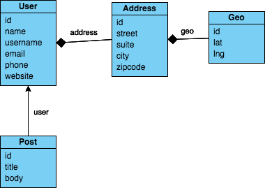

GraphQL
Query Language for APIs
http://bit.ly/graphql-demo
GraphQL
- alternative à REST
- language de requêtage
- fortement typé
- définir précisément les éléments voulus
- point d'accès unique (ex: /graphql)
Requête simple
query {
userCount
}
Payload JSON
{"query":"query {\n\tuserCount\n}"}Réponse
{
"data": {
"userCount": 10
}
}Modèle
Requête complexe
multi-requête, paramètres et champs
query {
userCount
usersPaginated(page:1,count:5,sortedBy:"name"){
name
company{
name
}
}
}
Outils
- GraphiQL
- Insomnia
- IntelliJ JSGraphql plugin
Mutations
Séparation requêtes/modifications
- Query GraphQL ~ GET REST
- Mutation GraphQL ~ POST,PUT,DELETE REST
Input types
Schémas GraphQL
Définition des types, interfaces, fragments, input, queries et mutations
Types racines Query et Mutation
Fichiers .qraphqls, b{}
Client JS - Apollo 1/2
Dependences NPM:
- apollo-cache-inmemory
- apollo-client
- apollo-link
- apollo-link-http
- graphql
- graphql-tag
Client JS - Apollo 2/2
gql`
query {
userCount
}`
Pour aller plus loin
- Site officiel : http://graphql.org/
- Tutoriel Spring Boot : http://www.baeldung.com/spring-graphql